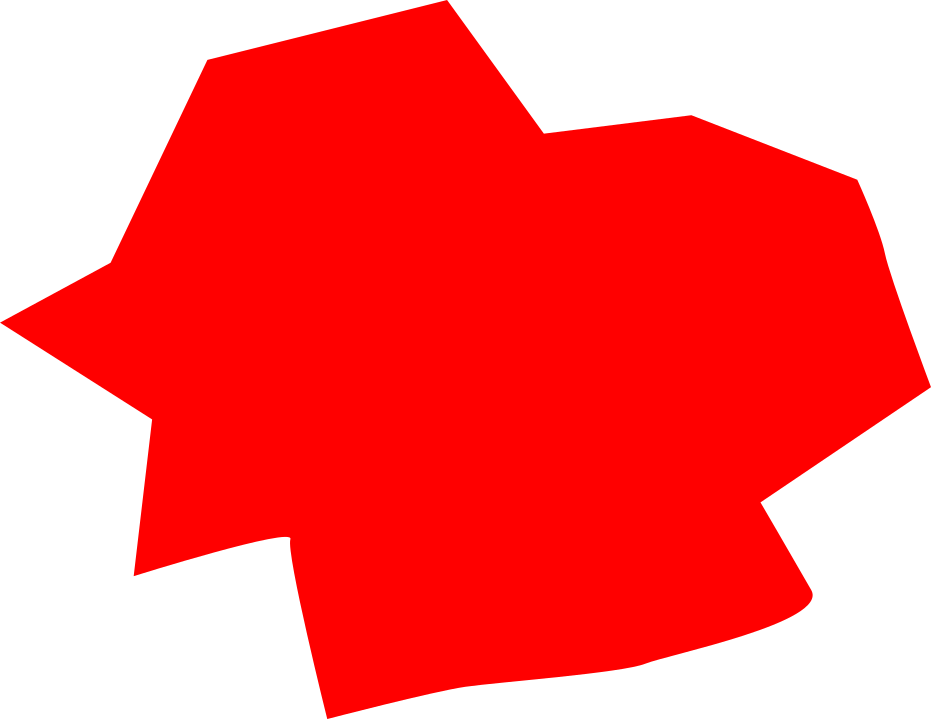

La, la-la-la-la-la-la
La-la-la-la-la-la, la
La, la-la-la-la-la-la
La-la-la-la-la-la, la
I'm a misfit, 맞는 fit 자체가 없지
숨이 턱턱 막힌 옷을 입은 느낌
지겹지 고민 없이, 그냥 rip it
나를 끌어내리려 할수록 get lifted
애써 날 재단하려는 건 됐어
지금 이대로 가, the best never mess up
의심이 없지, 그저 bring it to the next
난 듣는 방법을 몰라, like I'm a def
왜 내가 발을 맞춰야 돼? 어림없음
다 비슷한 모습, 더욱 거슬리는 bossin'
Two phones 에어플레인, 모드 날아갈 때야
누구는 내가 미쳤대, nope
It doesn't matter what they say
어차피 난 내 마음대로 할 텐데
난 언제나 튀어나온, 못 다치기 싫으면
You better just stay out of my way, okay?
Get out my way y'all, get out my way
아무도 나를 막지 못해
우릴 억지로 똑같은 틀에 끼워 넣다간
부숴버릴지도, you dig?
Get out my way y'all, get out my way
지킬 법이법이 없네
적당히라는 법도 날 멈출 방법도
새 룰을 만들어 right here
누군가의 규칙 묻지 말고 따르라는 듯이
채우려고 하네 목줄을 짓밟으려 해 꿈을
내가 얼마나 높이 조준을 하고 있는지
모르니, 따분한 소릴 늘어놔
뻔한 소리뿐인 plot
내게 닿기도 전에 뻗어, LeBron block
입이 쩍 벌어지네 이젠 분위기 파악
하길 우리 태도는 늘 do or die
It's been a minute, I'm in it, 이미 난 이기는
기분 느끼며 지키는 motto without the business
Misfit never fit in
날 막아서는 것들 이미 발아래로 six feet
깨버려 시스템, 믿어 너의 instinct
Don't stop with attitude like you are 15
Rude boys hit the track 식겁해
우린 다르게 보는 중이라 삐딱해
Get out my way y'all, get out my way
아무도 나를 막지 못해
우릴 억지로 똑같은 틀에 끼워 넣다간
부숴버릴지도, you dig?
Get out my way y'all, get out my way
지킬 법이법이 없네
적당히라는 법도 날 멈출 방법도
새 룰을 만들어 right here (break it down like)
La, la-la-la-la-la-la (ooh-ooh)
La-la-la-la-la-la, la (ha-ha-ha)
La, la-la-la-la-la-la (here's my favorite part, uh)
La-la-la-la-la-la, la (now everybody sing)
La, la-la-la-la-la-la (hey, hey, I wanna hear you like)
La-la-la-la-la-la, la (hey, hey, come on and tell me like)
La, la-la-la-la-la-la (hey, hey, hey)
La-la-la-la-la-la, la (check it out, yo)
Aight, 위기도 분위기도 나를 움직이는 건
아냐, 내가 옳다 느낄 때 던지기로
All of my impact, 너도 이걸 느낄 때
넌 너만의 길에, be original
한계라고 그어 놓은 선 위
당연하단 듯, crossin' over it
매일 세워, new anniversary
매일 써, history 외쳐, we made it
Warnin' NCT we mobbin'
네가 어디에 있든지, we comin'
눈이 마주치면, 망설이지 말고, jump in
Baby, come and get it on my team, let's run it
Gotta get up, go to bigger better things
갈 길이 멀어, 피드백은 no, thanks
똑바로 걷기엔 전부 비스듬해
우린 다르게 보는 중이라 삐딱해
Get out my way y'all, get out my way
아무도 나를 막지 못해
우릴 억지로 똑같은 틀에 끼워 넣다간
부숴버릴지도, you dig?
Get out my way y'all, get out my way
지킬 법이법이 없네
적당히라는 법도 날 멈출 방법도
새 룰을 만들어 right here
La, la-la-la-la-la-la
La-la-la-la-la-la, la
La, la-la-la-la-la-la
La-la-la-la-la-la, la
La, la-la-la-la-la-la
La-la-la-la-la-la, la
La, la-la-la-la-la-la
La-la-la-la-la-la, la
